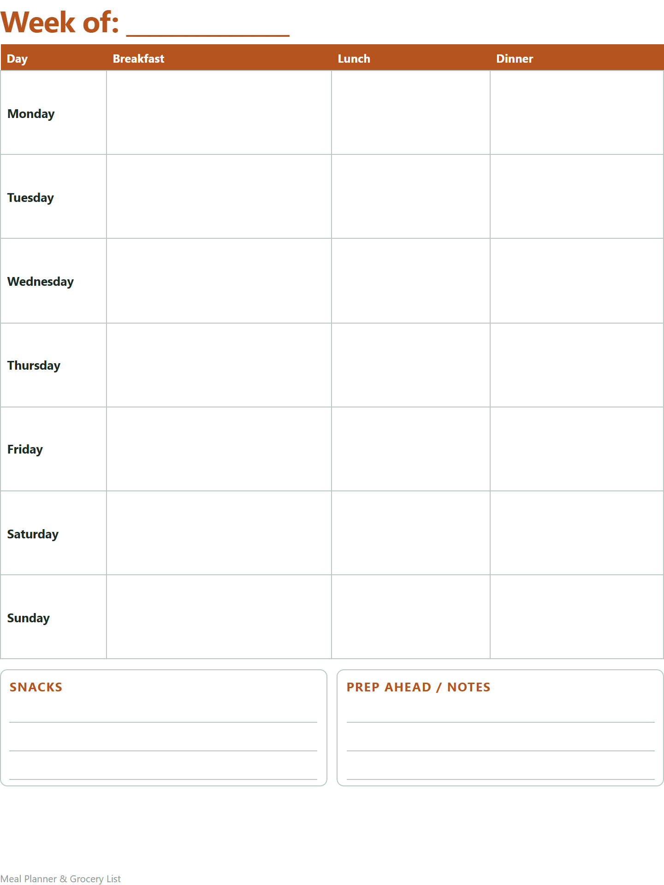

Free printable weekly meal planner and grocery list
Breakfast, lunch, dinner and snacks for every day of the week, with room for prep-ahead notes, and a grocery list sorted by aisle so you shop once. Free, in US Letter and A4.

It comes through Gumroad: type your email, choose $0, and the PDFs arrive by email. You'll also get the Black Friday sale (one email, in late November). Unsubscribe with one click any time.
It's a fillable PDF: type into it in Adobe Acrobat Reader or your web browser, then save or print. Or print it blank and write by hand. Print at 100% / "Actual size".
Using it
- Plan dinners first, then fill breakfasts and lunches around the leftovers.
- Write the grocery list from the plan, aisle by aisle, and check the cupboards before you go.
- Note what you'll prep ahead on Sunday: chopped vegetables and a pot of grains save most weeknights.
Recipe cards, family favorites and a pantry list too
Meal Planner & Grocery List: printable PDF, US Letter and A4.
Get it ($4)